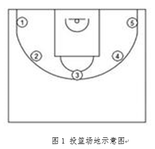
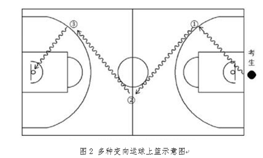

2026秋 · SPORT40003.01 · 马祖勤
来源：复旦教务系统教学大纲，本轮使用已授权账号下载。原始正文与考核信息；去除联系方式和网页脚本，内嵌图片按原字节去重保存。
通过合理的篮球教学和科学的锻炼过程，切实增强学生体质和健康水平，激发学生参与体育活动的兴趣，培养他们终身参与体育锻炼的意识和习惯，使学生掌握篮球这项终身受益的体育运动项目，为培养更多德、智、体、美全面发展的合格人才服务。
Through rational basketball teaching and scientific physical training, we can effectively improve students' physical fitness and health conditions, stimulate their interest in participating in sports activities, foster their awareness and habits of lifelong physical exercise, enable students to master basketball—a sport that benefits them throughout their lives, and contribute to cultivating more qualified talents with all-round development of morality, intelligence, physical fitness and aesthetics.
比较系统地掌握篮球运动的基本理论知识，掌握篮球运动的特点和发展概况和相关教学改革的发展动态。能够初步掌握篮球运动教学的基本原理和一般规律，初步掌握篮球运动教学的一般教法知识，初步掌握篮球运动竞赛的组织编排和裁判工作的基本知识；掌握主要技术动作，并能够较为熟练的运用；学习战术配合方法的基本要点；具备训练、竞赛等体育活动的组织与指导工作的能力，并具有在实践中初步运用的能力。
本课程授课方式以现场教学为主要形式，包括4学时理论课教学，其余教学均在专业场地开展实践教学。教学时教师要注意以下事项：
（一）安全第一原则，重视安全教育，结合教学环境特点，科学安排教学，防止发生伤害事故。
（二）在教学过程中，教师要认真钻研教材和教法，提倡创新，根据篮球运动的特点采用多种教学法及手段调动学生学习积极性。
（三）动作要领提倡用通俗易记的口诀。
（四）充分发挥学生的主观能动性。学生自主练习与教师指导相结合。同时，加强个别对待原则，“抓二头、带中间”，使基础好的学生“吃得饱”，基础差的学生跟得上。
（五）加强学生对团队意识的培养以及自觉遵守规则的诚实和信用。
|
周次 |
教学内容 |
|
第1周 |
1.复旦大学体育课教学常规的宣讲。 2.体育课安全要求的宣讲。 3.篮球专项课的一些要求。 4.学习滑步(侧、前、后) 5.学习高、低手运球、变向、变速运球。 6.学习双手胸前、单手肩上传接球。 7.学习单手肩上投篮。 要求： 1.基本掌握运球技术动作要领。 2.传接球与投篮手法正确。 |
|
第2周 |
1.学习跳步急停、跨步急停。 2.学习交叉步持球突破。 3.学习行进间胯下、背后、后转身运球。 4.复习单手肩上投篮。 要求： 1.各种基础运球的手法运用。 2.突破时的拍球与探肩。 |
|
第3周 |
理论课 |
|
第4周 |
1.复习双手胸前传球、单手肩上传接球。 2.学习防有球队员、无球队员 3.复习交叉步持球突破。 4.学习传切配合。 要求： 1.防守时的站位选择。 2.传球的时机。 |
|
第5周 |
1.复习跳步急停、跨步急停。 2.学习抢篮板球技术(结合单手肩上传球)。 3.学习多种变向运球上篮练习。 4.学习掩护配合。 要求： 1.掩护的选择以及站位 2.变向运球时拍球部位与脚移动。 |
|
第6周 |
1.复习抢篮板球技术(结合单手肩上传球)。 2.学习全场三人“8”字围绕推进上篮。 3.复习多种变向运球上篮练习。 4.教学比赛：简介“一三一”落位进攻、“二一二”联防。 要求： 1.三人“8”字围绕推进上篮的传球与位置移动。 2.“一三一”进攻与“二一二”联防的落位与移动。 |
|
第7周 |
1.学习快攻“二打一”和“一防二”。 2.复习传切配合(一传一切)。 3.五点投篮。 4.教学比赛。 要求： 1.传切配合要领。 2.“二打一”进攻方法与防守原则。 |
|
第8周 |
1.复习掩护配合。 2.学习抢篮板球短传、长传、快攻。 3.复习交叉步持球突破上篮(结合假动作)。 4.教学比赛(学习半场人盯人防守)。 要求： 1.防守的站位选择 2.抢篮板球与快攻上篮的成功率。 |
|
第9周 |
1.五点投篮。 2.复习多种变向运球上篮练习。 3.教学比赛(复习“二一二”联防、“一三一”进攻“二一二”联防。 要求： 1.移动投篮的选择。 2.综合技术衔接与熟练。 |
|
第10周 |
1.复习防有球队员、无球队员。 2.学习策应配合。 3.复习“二打一”和“一防二”。 4.教学比赛(联防)。 要求： 1.球动与人动时防守移动。 2.“二打一”攻防成功率。 |
|
第11周 |
1.五点投篮。 2.复习掩护配合。 3.复习策应配合。 4.教学比赛。 要求： 1.掩护时机、位置选择合理。 2.五点投篮时移动迅速。 |
|
第12周 |
理论课 |
|
第13周 |
1.复习纵向传切配合。 2.复习多种变向运球上篮。 3.教学比赛(半场三对三或四对四、盯人防守)。 要求： 1.移动投篮中移动时机与传球到位。 2.传切上篮的快切与传准与配合成功率。 |
|
第14周 |
1.五点投篮。 2.复习多种变向运球上篮。 3.快攻“三打二”与“二防三”。 4.教学比赛。 要求： 1.传球准确，上篮稳定命中。 2.掌握“三打二”攻防原则。 |
|
第15周 |
1.考试：五点投篮。 2.教学比赛。 |
|
第16周 |
1.考试：多种变向运球上篮。 2.教学比赛。 |
|
第17周 |
机动。 |
|
第18周 |
机动。 |
本课程为考查科目，课程成绩由平时成绩和期末考成绩组成。成绩构成的比例为平时成绩占30 %，期考成绩占70 %。平时成绩的考核包括考勤、课堂表现、学习态度、课堂提问及作业完成情况等。期末考成绩的考核采用技术考核。采用等级制进行成绩评定。
技术考核方法如下：
（一）平时成绩：
上课出勤率(10%)、上课认真程度(10%)、作业完成的质量(10%)。
（二）技术考核：
1.基本技术：五点投篮。（40分）
组织方法：如图1所示，在以篮圈中心投影点为圆心，5.5米为半径所划的弧线上设置五个投篮点（球场两侧0度角处、两侧45度处和正面弧顶），每个点位放置5个球，共25个球。考生须从第1投篮点或第5投篮点开始投篮，按逆时针或顺时针方向依次投完每个点位的5个球。要求考生必须在弧线外投篮，球出手前双脚不得踩线，若踩线投中则计为无效投篮，不得分。每人测试2次，取最好成绩。

评分方法、标准：投中18球（含）以上为满分30，低于18个进球则每少进一球扣两分。技术评定10分。
图1 投篮场地示意图
2.综合能力：多种变向运球上篮。（30分）
组织方法：如图2所示，学生在球场端线中点外出发区持球站立，听到哨声从底线出发。用右手运球至①处，在①处做右手背后运球，换左手向②处运球，至②处做左手后转身运球，换右手运球至③处，在③处做右手胯下运球后右手上篮。用左手运球返回③处，在③处做左手背后运球，换右手向②处运球，在②处做右手后转身运球，换左手向①处运球，在①处做左手胯下运球后左手上篮。之后做同样的动作再重复一次。每人测试2次，取最好成绩。
篮球场地上的标志①、②、③为以40厘米为半径的圆圈。①、③圆圈中心点到端线内沿的距离为6米，到边线内沿的距离为2米。②在中线上，到中圈中心点的距离为2.8米。
评分方法、标准：4次上篮全部命中为满分10分，每一次上篮不中扣2分。技术评定20分。运球要有一定速度，控球熟练，上篮动作舒展协调。

技术考核内容与评分标准
|
五点投篮 |
多种变向运球上篮 |
|||||||||
|
30 |
18 |
技 评 分 10 分 |
10
|
4 |
技 评 分 20 分 |
||||||
|
28 |
17 |
||||||||||
|
26 |
16 |
8 |
3 |
||||||||
|
24 |
15 |
||||||||||
|
22 |
14 |
6 |
2 |
||||||||
|
20 |
13 |
||||||||||
|
18 |
12 |
4 |
1 |
||||||||
|
16 |
11 |
||||||||||
|
14 |
10 |
2 |
|
||||||||
|
12 |
9 |
||||||||||
|
10 |
8 |
0 |
|
||||||||
|
8 |
7 |
||||||||||
|
6 |
6 |
|
|
||||||||
|
4 |
5 |
||||||||||
|
2 |
4 |
|
|
||||||||
|
0 |
3 |
||||||||||
1、王家宏.《球类运动——篮球（第三版）》.高等教育出版社，2015年
2、中国篮球协会审定，篮球竞赛规则，北京，北京体育大学出版社，2021年8月（或当年最新版本）
3、中国篮球协会审定，篮球裁判员手册，北京，北京体育大学出版社出版，2021年10月（或当年最新版本）
| 项目 | 比例 | 评定说明 |
|---|---|---|
| 出勤Attendance | 15.0% | 旷课一次扣3分，迟到或早退一次扣1分 |
| 课堂表现Participation | 15.0% | 按照课堂表现给予分值 |
| 期末考试Final Examination：其他 | 70.0% | 五点投篮：（40分） 投中18球（含）以上为满分30，低于18个进球则每少进一球扣两分。技术评定10分。 多种变向运球上篮：（30分） 4次上篮全部命中为满分10分，每一次上篮不中扣2分。技术评定20分。 |